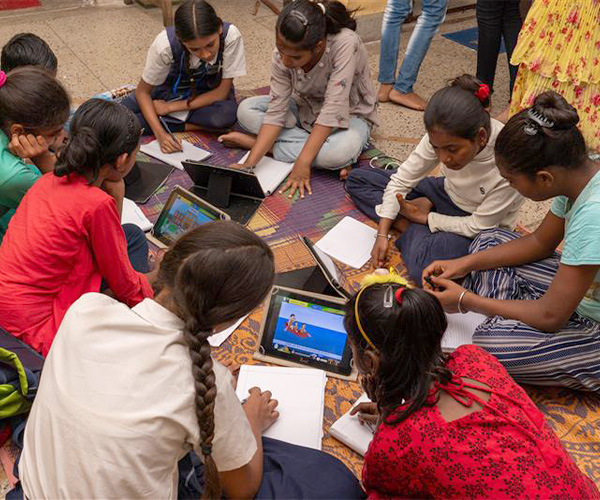

PROYECTO EDUCATIVO
Formación educativa y laboral para ampliar oportunidades de empleo y fortalecer la autonomía de jóvenes y adultos.
SOBRE EL PROGRAMA
“Saber para Trabajar” combina alfabetización, formación básica y capacitación laboral para acompañar a personas que buscan nuevas oportunidades de empleo.
El programa incluye talleres prácticos, orientación profesional y herramientas para desenvolverse en ámbitos laborales formales e informales.
Además, se trabaja en habilidades personales como comunicación, organización, trabajo en equipo y preparación para entrevistas.

IMPACTO
Beneficiarios directos
Países activos
Inserción laboral posterior
Talleres realizados
ACTIVIDADES
Talleres orientados al empleo y oficios.
Uso básico de tecnología y plataformas laborales.
Preparación de CV y entrevistas laborales.
Tutorías y seguimiento personalizado.
Tu apoyo ayuda a que más personas puedan acceder a formación educativa y oportunidades de trabajo.
Apoyar este proyecto